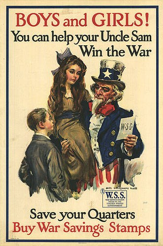
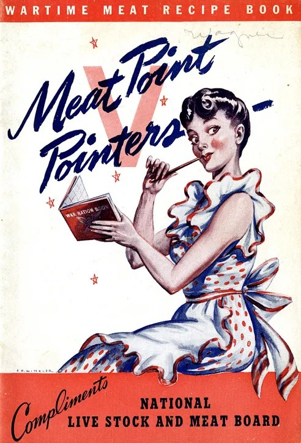

Le mot est récent, l'idée beaucoup moins
Nudge, c'est le « petit coup de coude » de Richard Thaler et Cass Sunstein, dans leur livre de 2008. L'idée : orienter un comportement sans interdire ni obliger, juste en jouant sur la façon dont le choix se présente.
Sauf que le principe traîne déjà partout dans la première moitié du 20e siècle. Petit tour d'horizon.
Avant le nudge, il y avait…
Les timbres d'épargne de guerre
Les enfants achètent des timbres pour quelques cents et les collent dans un carnet. Un carnet plein se convertit en bon d'épargne de guerre. Le dispositif revient pendant la Seconde Guerre mondiale.
Une collection, une progression visible, une case vide qui appelle la suivante. De la gamification avant l'heure.
mécanique : collectionner, compléter
Les « flambeaux de la liberté »
Pour une marque de cigarettes, Bernays fait défiler à Pâques, sur la Cinquième Avenue, des femmes qui fument devant les photographes. Il appelle ça des torches of freedom. On ne vend plus un paquet, on vend un geste d'émancipation.
Un an plus tôt, il avait tout théorisé dans un livre au titre sans détour : Propaganda (1928).
mécanique : changer le sens d'un gesteLe stakhanovisme
Une nuit d'août 1935, le mineur Stakhanov extrait 102 tonnes de charbon, quatorze fois la norme. Le régime en fait un héros. Suivent la compétition entre ouvriers, les records affichés, les distinctions.
Des points, un classement, des badges. Ça ne vous rappelle rien ?
mécanique : classement et récompenseLes abats et la décision de groupe
Pays en guerre, viande rationnée : il faut convaincre les ménagères de cuisiner les abats. Lewin compare deux méthodes. Une conférence bien faite, d'un côté. De l'autre, une discussion en petit groupe qui se termine par une décision collective.
Résultat : environ 3 % des femmes du premier groupe servent ensuite des abats, contre près d'un tiers dans le second. Ce qu'on décide ensemble tient mieux que ce qu'on nous explique. Un pont direct avec l'intelligence collective.
mécanique : s'engager devant le groupe
La mouche et l'escalier piano
À l'aéroport de Schiphol, une petite mouche gravée au fond des urinoirs suffit à améliorer la visée. Aad Kieboom, à l'origine de l'idée, parle de 80 % de débordements en moins et de 8 % d'économies sur le nettoyage. Des chiffres très repris, jamais vraiment mesurés, mais l'idée a fait le tour du monde depuis le début des années 1990. Comme le glisse L'Opinion : « quand le nudge est plus grand que la réalité, on imprime le nudge ». L'histoire de la mouche
À Stockholm, en 2009, des marches transformées en touches de piano attirent les passants loin de l'escalator voisin. Un nudge… par le jeu. Voir l'opération
mécanique : rendre le bon geste amusantEt en France ?
Pas besoin d'aller à Amsterdam. On en croise tous les jours, souvent sans les voir.
Les fruits à hauteur des yeux
À la cantine, on place les fruits devant, bien en vue, et les pâtisseries un peu plus loin. Personne n'interdit le gâteau. On rend juste la pomme plus facile à attraper.
placer, rendre visibleLe don d'organes par défaut
En France, chacun est présumé donneur, sauf s'il a dit non (registre des refus). Pas d'obligation : on a simplement choisi la réponse par défaut.
l'option par défautLes chevrons sur l'autoroute
« Un chevron, danger. Deux chevrons, sécurité. » Des flèches peintes au sol pour mesurer sa distance, sans radar ni amende.
montrer la normeLe radar pédagogique
Un smiley qui sourit ou qui fait la tête, ou juste votre vitesse affichée. Aucune sanction, et pourtant on lève le pied.
le retour immédiatLe cendrier-sondage
Deux fentes, une question (« Plutôt mer ou montagne ? ») et on vote avec son mégot. Jeter son mégot au bon endroit devient un jeu. Le plus proche de notre sujet !
le jeu, encore luiLe Nutri-Score
Une lettre et une couleur sur l'emballage plutôt qu'un tableau de chiffres. Le choix reste libre, il est juste plus lisible.
simplifier l'informationEt dans l'administration ? La DITP (Direction interministérielle de la transformation publique) a une équipe dédiée aux sciences comportementales. Elle teste ce genre de leviers sur des courriers, des formulaires, des démarches. Son manuel méthodologique est en accès libre.
À retenir
- Le jeu et le nudge utilisent les mêmes ressorts : plaisir, progression, regard des autres.
- Ces ressorts n'ont pas de morale. Ils ont servi la publicité, la propagande, l'effort de guerre… et la santé publique.
- Ce qui fait la différence, c'est l'intention, et surtout ce que les participants en savent.
Deux usages, mêmes outils
Quand ça émancipe
Le jeu ouvre la parole, donne de l'élan, aide le groupe à décider par lui-même. On peut en parler ouvertement, et même en rire ensemble.
Quand ça manipule
Le jeu sert à faire passer une décision déjà prise, ou à pousser un comportement que personne n'a choisi. Ça marche… tant qu'on ne regarde pas les coulisses.
En pratique : la question à poser
Avant de lancer un jeu dans votre service, ou pour ouvrir le débat avec le groupe :
- Annoncez l'intention du jeu, au moins à la fin. Le débrief fait partie du jeu.
- Laissez une porte de sortie : on peut observer sans jouer.
- Vérifiez que le résultat n'est pas écrit d'avance.
Pour aller plus loin
- Richard Thaler et Cass Sunstein, Nudge, 2008 (trad. française chez Vuibert).
- Edward Bernays, Propaganda, 1928 (rééd. Zones / La Découverte).
- Kurt Lewin, « Forces behind food habits and methods of change », 1943.
- Le Parisien, « Des exemples de nudges qui ont fait leurs preuves », 2016.
- L'Opinion, « La société de contrôle, simple comme une fausse mouche au fond d'un urinoir », pour la voix critique.
- Jane McGonigal, Reality is Broken, 2011, pour le versant « gamification ».
✎ arnaud-simart.fr